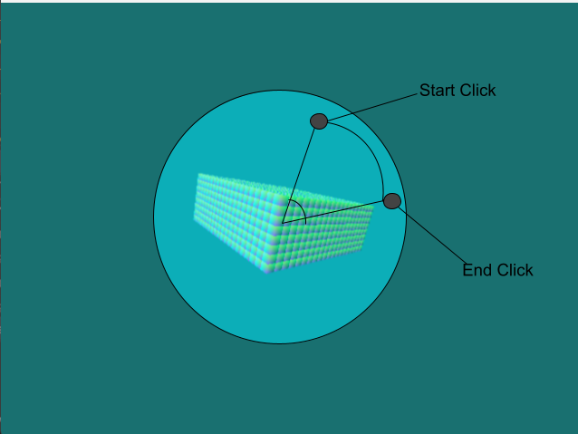
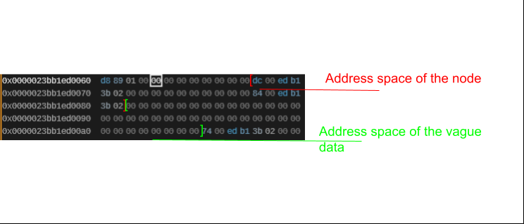

Adventures into DirectX11
- Platform: PC
- Tools: WinAPI, C++, DirectX11, RADDebugger, Emacs, RenderDoc.
- Link to GitHub Source Code
As part of my continued learning and exploration in the game development field, I've taken it upon myself to start learning 3D and have chosen DirectX to be my graphics API of choice. This project also includes the further development of my current set of tools for development. This includes creating librarys for my memory pool allocation and file loading methods.
Responsibilities
- Further developing and utilizing custom made memory allocation library.
- Follow Microsoft Documentation for the setup of 3D graphics pipeline.
- Develop a custom OBJ file loader to load files into Direct3D pipeline.
- Developing a voxel chunk editable size and resolution.
- Implementing an arc ball camera.
Developing the Voxels
The major design idea for this game is to be able to create sculptures which you can place in a sculpture garden. After some back and forth on deciding how I was going to actually implement this, I decided on developing a voxel based world which you can edit blocks of cubes.
My first implementation of voxels was through cube instancing. I started by creating a cube 'model' out of vertices and indices which I could supply to the DirectX pipeline. I then created an instance buffer based on this cube and drew the instanced cubes. It was then that I realized that this would not be an effective solution to drawing a block of cubes because I wanted to be able to only draw the faces that were visible on the outside.
So I started from the beginning, back to the vertices and indices, and this time I created one large array of all of our cubes in the chunk. I then determined the placement of all of these voxels based on dimensions which I could specify. When initializing each cube, I then check to see whether each face in the cube should be drawn based on the direction of the face and if the cube in that direction was inside the number of voxels in the chunk.
All of this voxel information is then sent to the DirectX pipeline where I created a singular vertex buffer for our cube, then iterated through each cube to create separate index buffers for only the necessary drawn voxels and to only include the necssary indices of the faces which face outward from the chunk. Then in my draw call, I grab each voxel I'm going to draw and its information and use a mapped subresource to edit a transformation matrix in the vertex shader for each voxel cube to have it placed in a location according to the voxel location as defined previously.
Arc Ball Camera
Next according to my design intent, I found it necessary to implement an arc ball camera so that players better edit the voxel chunk.
This took a couple of attempts. I started by doing some R&D looking at various ways to implement this camera. According to the first resource I found, Arc ball works by taking the calculated coordinates of the mouse to world space, and then mapping them onto a sphere and calculating the angle of rotation between the coordinates of the starting click and the current location of the mouse coordinates.

I then found this source which had code that I found I could translate into the DirectX pipeline. Using the method I loosely described above, and through the use of quaternion math (which I took the time to understand via this wonderful source), I successfully implemented the camera.
Further Improvements to Memory
As I continued to develop this game, I've also been spending time improving the various APIs I created for any program I make. The most imporant changes being in my Memory pool/arena code. The most recent part I've been developing has been on debug vectors, as I now need to allow for editing of the voxel chunk based on where the mouse is clicked and where that correlates to the voxel chunk. My implementation of this requried the implementation of linked lists.

To continue to align with the memory allocation techniques I developed previously, linked lists need to utilize memory arenas and could not allocate outside of this. I had previously written this ability in an older project however, this new implementation had a greater catch, the data which went into the linked list had to be vague enough that it could be used for any struct I wanted.
To allow for this, in the intialization step of the list you are required to define the size of the data which will be occupying the list. Then in the actual implementation I take the arena used for the list, fill it out with as many nodes as I can. Then inside of this pushed data, I essentially create another arena, where I iterate through and push a node value and then right next to it I place it's data such that the data and the node are side by side in memory. This is also where I initialize the node's next value based on the next location that a node will be located (which is after the location of our data).